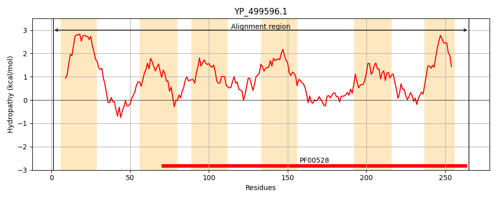
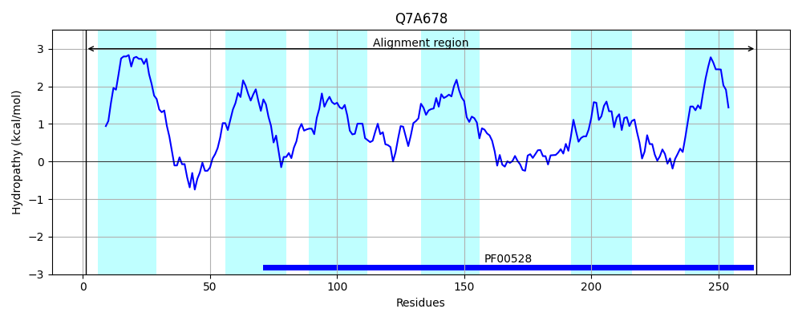
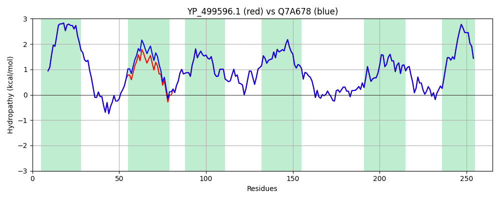

Hit Accession: Q7A678
Hit TCID: 3.A.1.11.8
Hit Description: gnl|BL_ORD_ID|15377 gnl|TC-DB|Q7A678|3.A.1.11.8 PotB protein OS=Staphylococcus aureus (strain N315) GN=potB PE=3 SV=1
Mach Len: 265
e:0.000000
Query TMS Count : 6
Hit TMS Count: 6
TMS-Overlap Score: 7.100000
Predicted Substrates:CHEBI:9218;spermidine, CHEBI:9219;spermine
BLAST Alignment:
Score: 1325 , Bit scores: 514 bits, E-value: 0.0e+00, Alignment length: 265, Percentage identity: 99
Query: 1 MRNTNKFLLIPYLLWMVIFIIVPVVLLIYFSFLDINGHFSFTNYQQIFTTKYLKMFAYSILYAASITIITLTISYPAAYYITRSKFQNILLMIMIIPTWINLLLKTYAFIGLLSHDGVINQFFHLFNLPSFNLLFTTGAFLVVASYIYIPFMILPIFNSMKAIPNNLLQASSDLGASPFYTFRKVIMPLTKEGVMTGIQVTFIPSLSLFMITRLIAGNKVINIGTAIEEQFLTIQNYGMGSTIAIFLIVFMAFILIITKSSNGRG 265
MRNTNKFLLIPYLLWMVIFIIVPVVLLIYFSFLDINGHFSFTNYQQIFTTKYLKMFAYSILYAA ITIITL ISYPAAYYITRSKFQNILLMIMIIPTWINLLLKTYAFIGLLSHDGVINQFFHLFNLPSFNLLFTTGAFLVVASYIYIPFMILPIFNSMKAIPNNLLQASSDLGASPFYTFRKVIMPLTKEGVMTGIQVTFIPSLSLFMITRLIAGNKVINIGTAIEEQFLTIQNYGMGSTIAIFLIVFMAFILIITKSSNGRG
Sbjct: 1 MRNTNKFLLIPYLLWMVIFIIVPVVLLIYFSFLDINGHFSFTNYQQIFTTKYLKMFAYSILYAALITIITLAISYPAAYYITRSKFQNILLMIMIIPTWINLLLKTYAFIGLLSHDGVINQFFHLFNLPSFNLLFTTGAFLVVASYIYIPFMILPIFNSMKAIPNNLLQASSDLGASPFYTFRKVIMPLTKEGVMTGIQVTFIPSLSLFMITRLIAGNKVINIGTAIEEQFLTIQNYGMGSTIAIFLIVFMAFILIITKSSNGRG 265 | Protein Hydropathy Plots: |
|---|
|  |  |
Pairwise Alignment-Hydropathy Plot:
|
|---|
|  |